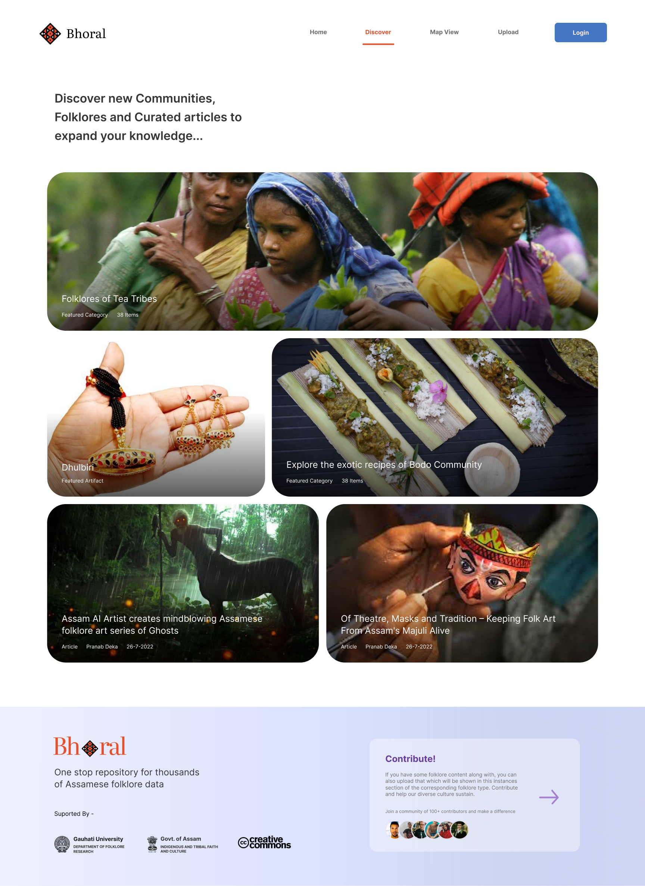

Designing a folklore repository system
Bhoral is a project focused on preserving and narrating Indian folklores in digital form, beginning with Assam. The goal was to create a lightweight digital archive for stories, accessible across devices and visually compelling to the modern audience.
Motivation
Located in the northeastern region of India, Assam - a state with rich heritage and diverse ethnic groups, where Cultural diversity is a hallmark. Being an Assamese myself, I initiated this project out of a personal drive to address this issue. The foundation of this project can be laid into the below contexts.
Rich Heritage : The vibrant culture of Assam is a result of the continuous exchange of ideas and practices between the Indo-Aryans and the tribals.
Folk Heritage : There are 24+ indigenous communities live in Assam and they have been effectively preserving their rich folk heritage orally for a very long time
Threats to the ethnicity : However, the advent of globalization and the cultural migration has had a negative impact on the region's ethnicity.
That's how the Idea of Bhoral was born!
Bhoral(ভঁৰাল) in Assamese translates to 'A storehouse to preserve threshed grain for future use'
Problem
The rich folk culture of Assam is on the verge of disappearing, and the institutional archives that are in place right now failed to create a common repository to preserve it and have done nothing to engage the local ethnic groups
Goal
Design an interface that makes browsing and reading folk tales engaging, while respecting their cultural origins and keeping them open for community contribution.
Design Process
Not a planned process, but a series of steps that evolved organically as I learned more about the subject

System Decomposition

I started with understanding the workflow of digital archiving to see it from a system design perspective hoping to find areas of improvement or any alternate interventions that fits our need. With a in depth system decomposition we got many loopholes both technical as well as at process level, which opens our road further to work on a more efficient solution.
Key Problems & Solutions
An affinity mapping of all these problems resulted in these 7 major problems areas.
Archiving isn't a solo endeavor
it requires collaboration from individuals across different fields, operating within an institution. As a designer, selecting the right problem area, regardless of personal motivations, proved challenging
The scope has been narrowed down to two verticals from the 7 identified solutions

1. Identifying alternative methods for data collection and testing them out
Covered in this case study

2. Designing the repository website focusing on presenting the data creatively
Covered in a seperate case study
Identifying a suitable data collection method
Data collection and curation is challenging. Firstly, gathering raw data democratically proves difficult in diverse regions; secondly, there's a lack of meaningful connection with already available resources; thirdly, accessibility to a broader audience is overlooked; finally, there's low local awareness and difficulty in curation.
Four methods were Identified after going through existing research and discussions with experts, those are -
1. Community Volunteers
2. Researchers and Scholars
3. School and College students
4. People with interest through social Media
A multi-parameter analysis was done to go with one method to test. Which is Evaluation with school students

Testing the method
Regional(Bodo) Medium, 9th standard, Class strength - 45
The teacher explained categories of folklore with examples
Six groups were formed, Each group took one topic
Send the photographs/video clips through WhatsApp
A total of 138 folklore artefacts data is being collected.(45 Unique)
This study can can be further expanded and it promises an continuous source of indigenous folklore data at the same time educating students at the grassroot level.

Proposed System Mapping
Assuming we successfully amass a substantial content pool from these sources, I proceed to outline a system for an indigenous folklore archive repository.

Reflection
The study yielded significant success, showcasing the potential of the tested methodology in sourcing folklore data when implemented effectively. System mapping further facilitated the groundwork for designing the repository site. Overall it helped to see the problem with a new lens of participatory design approach, despite being limited by technical, resource and time constraints.